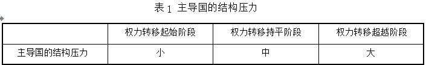
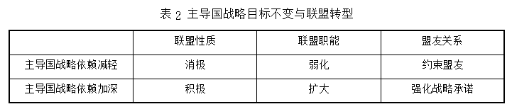

收录于合集

简
袁伟华
天津工业大学马克思主义学院／文化战略与社会发展研究中心副教授；
田光强
中国社会科学院亚太与全球战略研究院助理研究员
★
内容摘要：
联盟是一国通过外部方式增加权力，服务于自身战略目标的重要手段之一。主导国建构联盟体系旨在维持其主导地位。由于国际关系中 的权力格局始终处于变动之中，当主导国战略目标不变，相对权力变化有利于主导国时，其对于盟友的战略依赖下降。此时，主导国推动联盟转型以强化对于盟友的控制，盟友的自主性更受制约，主导国或者是将盟友地位矮化、联盟功能简化，甚至解散联盟。当相对权力变化不利于主导国时，联盟对于主导国的价值提升，主导国对于盟友的战略依赖加深。此时，主导国更可能提升盟友地位、强化联盟承诺、扩大联盟的职能。冷战结束之后，美日联盟经历了可能瓦解的危机。文章以冷战后美日联盟转型为例，探讨了美日联盟经历的三次大的转型。在当前的美日联盟中，解禁集体自卫权是美国给予日本一定自主权的重要标志，联盟的安全与防卫合作在空间上扩大至全球范围，在时间上覆盖了和平与战时的全过程。但是，美日联盟转型弱化了美国对于日本的控制，增加了美国卷入地区冲突的风险。
关键词：权力转移 结构压力 战略依赖 联盟转型 美日联盟
★
联盟是国际关系中经久不衰的现象之一，也是学术界持续关注的议题之一。 国家在一定国际形势下会为某种特定的战略目标而缔结联盟。 然而，随着国际局势风云变幻，联盟往往面临转型与瓦解。二战之后，美国为了维持其在战时建立起的主导地位，联盟已成为其重要的战略手段之一。冷战期间，为了与苏联争夺世界霸权，美国组建了全球性的联盟网络。冷战结束 后，不仅有福山提出的“历史的终结” 此类论断，也有人提出了联盟的终结的观点。美国在冷战期间缔结的多边和双边军事联盟，对于其外交和国家安全战略而言都是重要的，以至于多数美国人认为没有联盟的世界是很难想 象的。但也有人提出，随着冷战的结束，在一个相互依赖的世界，美国冷战 期间缔结的联盟都将消失。然而，冷战的结束并未导致美国联盟体系的瓦解。在朝鲜半岛、伊朗和以色列、俄罗斯和乌克兰、中国与日、菲之间，时任美国总统奥巴马再次确认对盟友安全的承诺。诸如北约和美国的亚太联盟体系在经历转型之后反而有强化的趋势。美国冷战期间缔结的联盟体系，在后冷战时代发生转型的深层次原因是什么？对这一问题的探讨，不仅有助于理解当今美国主导下的联盟转型，也关乎对美国主导下的联盟未来发展趋 势的预期。历史上的联盟都经历了从转型到瓦解的过程，但学术界对该现象并没有进行充分的讨论。因此有必要从理论层面诠释联盟转型的深层次原 因。尽管在国际关系中联盟是普遍现象，但由于联盟的类型不一，其转型动因也存在差异。本文主要探讨在权力转移之际，主导国构建的联盟发生转型的深层动因。
一、已有研究成果
联盟是国际关系中最古老的现象之一，但没有一个联盟是亘古不变的。国家为应对某种国际形势而做出不同的战略抉择，联盟总是与一国战略目标的调整、国际形势的变化息息相关。也就是说， 一旦当初缔结联盟时的情形发生重大变化，联盟必然面临瓦解或转型的可能。下文论述学界对于联盟转型动因的探讨。
（一）权力结构变化导致联盟转型
国际权力结构的变化是导致联盟转型的动因之一。联盟是一国在国际权力结构中获得有利地位的外部方式。古典现实主义代表人物汉斯· 摩根索（ＨａｎｓＪ．Ｍｏｒｇｅｎｔｈａｕ） 认为，国际社会中为权力竞争的国家，为了保持和改善其相对权势地位，通过联盟借助其他国家的实力以加强自身实力。联盟战略具有相当的灵活性，依据国际社会权力结构的变化而变化。如果均势遭到破坏，或者需要重新组合力量恢复均势时，领导者必然会改变阵营，抛弃旧联盟，组成新联盟。根据联盟能够增强国家权力的假定，所有国家都可能被纳入到联盟体系之中。显然，这并不符合国际关系的现实。一些现实主义学者偏好从国家安全角度分析联盟的缔结与转型。肯尼斯· 沃尔兹 （ＫｅｎｎｅｔｈＮ．Ｗａｌｔｚ）认为，出于维护国家安全缔结的联盟，会形成对强国的制衡性联盟。 **在多极体系中 ，出现三极或四极时，标志着国际体系从一种体系走向另一种体系，这种变化会存在多种与其他国家结盟以达到体系平衡的机会。**有学者提出，在两极体系下，持续时间长或固定的联盟，盟友从联盟中获得的收益分配 更加公平。因此，在两极体系中，联盟相对固定，但是多极体系下的联盟却具 有更高的灵活性。冷战结束之后，美国与澳大利亚联盟的转型主要是为了应对恐怖主义和中国崛起。换言之，国际结构的变化导致联盟转型。
除了国际体系中大国相对权力的变化会导致联盟改变之外，联盟内盟友之间相对权力的变化也会对联盟的既有预期和架构产生影响。尽管莫罗（ＪａｍｅｓＤ．Ｍｏｒｒｏｗ） 认为在不对称联盟中，弱国能力的变化不会很大程度上改变成员交易的性质，联盟在既定时期内更不可能出现变化。但是，当一国变得比盟友或对手更弱，由于其获胜的可能性或对解决冲突施加影响的能力下降，该国变得更加不愿意卷入冲突之中。它们的盟友也可能出于同样的原因，更不愿意支持它们。当一国权力经历重大变化，无论是变得更强还是更弱，它们可能更不愿意履行它们在之前情形下签署的盟约。换言之，在签署时对一国有战略价值的盟约，可能随着最初合作条件的变化而失去价值。郭锐和凌胜利认为，盟友之间权力不对称性的变化是推动美国东亚联盟转型的重要动力，其中首推经贸因素。盟友之间相对权力的变化，造成了实现既定目标的预期发生了变化，进而推动联盟转型。
（二）认知变化导致联盟转型
缔结联盟通常被认为是针对某种威胁的反应。这必然要求政治家在决定与谁结盟时需要衡量盟友以及潜在对手的意图。 权力和意图都是缔结联盟时应该考虑的因素。抗衡或追随最严重的外部威胁是国家缔结联盟的动因。政治家在衡量威胁时，考虑的因素主要有：综合实力、地缘的毗邻性、进攻实力和侵略意图等。这些因素中任何一个发生变化，都将改变国家对外部威胁的认知。 诚然， 作为影响外部威胁的因素也会发生变化。斯奈德 （ＧｌｅｎｎＨ．Ｓｎｙｄｅｒ） 指出，来自对手威胁程度的降低， 或者联盟替代选择的吸引力的增加，或者由于一国国内政治结构变化降低了联盟的价值，或者一国在联盟内影响力的增长等，都会引起联盟的转型。
当一国遭遇的外部威胁发生变化时，也会影响其战略行为。当外部威胁不复存在，联盟存在的基础就消失了。苏联解体之后，一些学者就认为北约已没有存在的必要了。当外部威胁更为严峻时，国家对于联盟的需求也就更加强烈，甚至会追求某种更有安全保障的联盟类型。如肖斌所言，如果一国遭遇的外部威胁水平高，则倾向于选择强义务的多边联盟战略；如果一国遭遇外部威胁水平低，则倾向于选择弱义务的双边联盟。也有学者指出，当外部威胁的程度较低时，一国可能选择与对手结盟，通过缔结束缚性的联盟，管理联盟间的内部威胁。但是，当外部威胁的程度不断提升时，该国会选择通过缔结联盟制衡对手，甚至采取追随战略与对手结盟。曹筱阳认为，美日同盟的变化在于威胁的多样化。换言之，对外部威胁认知的变化，会导致一国对于联盟类型的预期发生变化，进而推动联盟转型。
评估威胁需要考察认知因素，对于盟友可靠性的评估也依赖于认知因素。 因而，联盟信任也是推动联盟变化的重要因素之一。联盟信任的形成、变化与消失， 是联盟形成、变化与崩溃的微观心理基础。莱克 （ＤａｖｉｄＡ．Ｌａｋｅ） 指出，只有在领导人克服机会主义恐惧时， 联盟关系才得以发展。但一国难以确定盟友当前或未来的意图。因而，它们具有强烈的动机避免依赖盟友，甚至拒绝将军事技术转让给盟友，以免这些技术在以后用于对抗自己。在联盟关系的不同阶段，联盟困境不断变化并推动联盟信任的变化，联盟信任的变化是美韩联盟变迁的重要动力。基于认知为基础的威胁、信任变化都会导致联盟转型。
（三）利益变化导致联盟转型
在国际社会中，每个国家的偏好都存在差异，这种差异大体上可分为两类： 一类是维持现状国家，以安全最大化为目标；另一类是修正主义国家，以权力最大化为目标。 一国对自身利益界定的不同，导致联盟行为也有所不同。尽管国际社会的无政府特性会对国家的联盟行为产生一定的约束力，但是决定国家联盟行为更重要的因素是利益。国家更关注谁拥有权力，而非权力的不平衡性。利益而非权力，决定了国家如何选择敌友。当然，对于利 益的衡量也存在分歧，尤其是大国与小国的利益诉求存在差异。斯奈德指出，如果收益大于成本，国家就会缔结或加入联盟。成本主要是对盟友的承 诺，即牺牲了自主性。具有共同利益的国家，通过缔结代价高昂的联盟，促使早日实现它们希望的目标。因为一旦实现共同目标，每一个国家都会自动享有其收益。国家的利益偏好往往存在变化。我们难以清晰地区分一国是修正主义国家还是维持现状国家。吉尔平 （ＲｏｂｅｒｔＧｉｌｐｉｎ） 指出， 国际社会中的每一个国家都可能是修正主义国家，每一个群体或国家都期望变革国际体系以谋求更多的自身利益，制约这种诉求的努力在于收益与成本之间的 差距。
基于利益缔结的联盟，是难以期待用条约来约束盟友行为的。一些学者指出，如果国家利益变化，联盟将被破坏，条约只不过是废纸。在军事安全方面做出的承诺，由于具有重大成本和风险，因而条约尤其容易被破坏。二战之后，尽管美国曾经为盟友出头，但是其之所以这样做，绝不是出于遵守盟约的需要，而是美国领导人过分定义国家利益，夸大外在威胁的程度，低估军事干预的代价。当一国的国家利益发生变化时，之前缔结的联盟或许不再具有价值，那么其命运或终止、或转型、或加强。 换言之 ，国家利益变，联盟亦变。
（四）综合因素共同导致联盟转型
联盟具有制度特性。 由于沉没成本和惯性作用，即便不太令人满意的制度和条约承诺，也可能一直延续。具有自身生命力的联盟转型或者终结，是综合因素共同作用的结果。 联盟服务于国家特定的战略目标，对其价值的评估有四个关键因素：盟友面临外部威胁的水平；结盟国家的军事能力；盟友政策目标的共享程度；替代联盟的可获得性。 当这些因素一旦改变，联盟也会随之发生变化。例如，如果联盟的目标已经实现，条约中条款所指情况已不复存在，这就使得联盟的存在已没有实际意义。如威胁认知的变化、联盟可信性的下降、国内政治变化等因素，会导致联盟成员国重新评估联盟的价值。莫罗指出，三个因素的变化会导致联盟的改变：联盟内在安全或自主性上的恶化；没有联盟，其安全和自主性上依然有所改善；国家效用功能发生变化。宋伟和宋卓如提出，联盟的维持与瓦解有三个主要因素：战略利益、实力关系与国内秩序兼容性。共同战略利益的存在对于联盟的维持 有着重要意义。同时，实力关系影响到联盟本身的合作价值和对战略利益的 认知，国内秩序兼容性则塑造了联盟的可靠性以及对战略利益的认知。
通过案例分析，一些学者也发现联盟转型是综合作用的结果。左希迎考察了当前美国推动亚太联盟转型的影响因素。首先是中日、中美之间力量对比与中国外交风格的变化，其次是美国亚太再平衡战略的要求，最后是盟友亟需美国支持。冷战结束后，美韩联盟受到军事、经济两方面的挑战，双方通过签订《美韩自由贸易协定》，升级了双边联盟关系。美韩联盟之所以 发生转型，原因在于韩国经济腾飞、民族意识上升，加之美国的战略调整，韩国与美国距离拉大，分歧加深并公开化。美韩联盟关系由“主从型” 向“伙伴型” 转变。美国亚太联盟转型，受中美关系中的权力差距与信任水平的影响。美国对华战略在遏制与接触中呈现不同态势，美国的亚太联盟因此发生强弱变化。美国亚太联盟几经调整，通过利益的再协调、功能的再设置、关系的再调整、战略的再协商等，实现了联盟结构更趋平等化、联盟区域扩大化、联盟职能多元化等方面的转型。
既有的研究对联盟缘何发生转型进行了理论分析，权力结构变化可以解释体系性联盟转型，但对地区性联盟转型则解释力有限。认知因素固然可以 在联盟转型之后给予某些解释，却无法预期既有联盟转型的可能方向。利益因素的变化与其说是分析联盟转型，毋宁说是分析利益转型。综合因素的考察确实可以分析某些联盟的转型，但是缺乏理论简约性，且其结论隐含对特定联盟转型分析的风险。已有的分析更多地关注了联盟为何转型，但是对于联盟何时以及如何发生转型，没有做出较详细的论述。权力转移是一个线性 的发展进程，在这一进程中可能导致的结果是终止联盟或强化联盟。因此，这就需要考察在权力转移进程中影响联盟转型的其他因素。当前，中国崛起进程中面临着美国构建的亚太联盟体系的压力，如何预期这一联盟体系的未来变化，不仅值得进行理论思考而且应兼具现实关切。联盟作为国际关系中的普遍现象，缔结联盟的国家各有其战略目标。这就造成了国际关系中的联 盟具有不同的特性。本文并不试图解释一切联盟之转型，而是关注主导国为维持地位而缔结的联盟，随着形势的变化的可能转型。为此，本文以结构压力 和战略依赖为核心变量，分析联盟转型的机制，试图对联盟转型的可能方向进 行预测。借助过程追踪法，本文以冷战后美日联盟转型为案例进行验证。
二、本文的研究框架
在权力转移进程中，主导国由于担忧丧失其主导地位，所以面临的结构压力不断增大。在这种情况下，主导国要么放弃主导地位，要么更加依赖盟国以维持主导地位。 为维持主导地位，在结构压力和战略依赖的共同作用下，主导国会积极推动既有的联盟转型。
（ 一）结构压力
权力转移是国际关系中亘古未变的现象，没有任何一个国家可以始终居于主导地位。 由于国家之间权力增长的不平衡，因而国家之间的权力对比始终处于动态变化之中。所谓权力转移，是指在既定国际结构中， 主导国地位下降、崛起国地位上升并超越主导国的权力变化进程。 权力转移不仅是主导国和崛起国物质性力量的消长，而且意味着在社会性力量方面，崛起国已经取代了衰落中的主导国成为新的主导国这样一个历史进程。只有在崛起国最终确立了对国际秩序的主导权之后，才标志着权力转移进程的结束。从特定时期看，同样存在发生有利于主导国的权力变化，即主导国相对于其他大国的权力优势不断扩大。
一国在国际权力结构中的位次会带来结构压力，从而制约国家的对外行为。所谓结构压力， 实际上是一个大国在国际权力结构中的位置对其安全所带来的压力。 依据沃尔兹的观点，国际政治结构依据排列原则、单元特性和能力分配进行定义。国际社会处于无政府状态下，系统单元（国家）在功能上不存在差别。因此，最重要的就是依据单元（国家）的能力大小加以区分。尽管莱克认为国际关系中的等级制以权威为基础，但是在衡量等级制的指标中，军事实力和经济实力依然是重要的基础。在国际社会中，不仅事实上存在的权力结构位次会对国家产生结构压力，国家因担忧在未来权力结构中位次的下降也会造成结构压力。
由于国际权力结构的客观存在，任何一个国家都面临一定的结构压力。居于统治地位的国家担忧失去权力结构中的领先地位，担心越来越不能将其意志强加于其他国家，或者是越来越不能维护自己的利益。崛起国则会担忧崛起进程中受到主导国的压制。刘青建和张凯指出， 当前中国崛起面临如下结构压力：第一，美国试图遏制中国的实力增长和全球战略空间扩展的结 构性压力；第二，美国与其盟友联合对付中国的结构性压力；第三，美国的制度霸权对中国的国际选择和行动的制约；第四，美国假手周边邻国和国家集团遏制中国崛起的压力。 在所有国际体系中，单极体系对崛起国构成的挑战最大。单极体系对崛起国敏感度最高、容忍度最低、最有能力阻止崛起 国的发展。一些小国由于国力较小，在国际社会中存在脆弱性，其安全保障往往依靠霸权国家军事力量的支撑，以及由此形成的地区权力平衡体系。由于小国对于主导国建构的国际秩序形成了一定的路径依赖，一旦崛起国实力增长并且日益逼近主导国，各小国也面临对外政策的调整与适应。换言之，国际权力结构的变化也会给小国带来结构压力。
在权力转移进程中，国际体系中权力对比动态变化，给主导国带来了不同的结构压力。 通常而言，一国权力结构位置升高，其安全压力下降；一国权力结构位置下降，其安全压力上升。对于主导国而言，对于结构压力最为敏感。 然而，历史上的主导国都曾先后将主导地位让渡给崛起国。依据前景理论，人们对损失与获益的认知是不对称的，当面临获益时，行为趋于风险规避；当面临损失时，行为趋于风险接受。也就是说，在权力转移进程中，主导国对于丧失主导地位的忧虑要大于崛起国可能获得主导地位的满足感。从国际关系史角度看，大国之间的权力转移并不会一蹴而就，而是一个相对漫长的过程。就最近的英美权力转移而言，从十九世纪下半期开始，直至二战结束之后美国成为世界主导国，耗时超过半个多世纪。 **依据 “权力转移理论” 对权力转移进程的区分，可以将其分为三个阶段。**权力转移理论认为，权力持平是主导国和崛起国之间的权力对比关系接近阶段，即崛起国和主导国的相对权力比率大致在４∶５ 至６∶５ 之间。权力转移持平阶段之前可视为权力转移的起始阶段，持平之后可视为超越阶段。在权力转移的不同阶段，主导国面临的结构压力是不同的（见表1）
随着权力转移进程的深入，主导国的结构压力逐步增大，寻求有效方式继续维持主导地位的愿望则越加强烈。 **当国际权力分配出现不利于主导国的 变化时，主导国被迫在内部进行军事、经济和政治制度的革新，对外则降低成本、维持与其资源相对平衡的国际义务。**正在衰落的主导国降低成本的方式之一是对某些国家做出让步，与威胁性较少的国家结盟，共同分摊维持现状的成本，但让盟友分享现状的好处。概而言之，权力转移之际，主导国为了借助盟友的力量维持主导地位，愿意与某些国家缔结联盟。主导国需要盟友承担更大的义务，但也需要向盟友让渡更大的自主权。当然，在权力转移进程中，一些小国同样面临着结构压力，这就构成了主导国与小国缔结联盟的共同环境和现实需求。
（二）战略依赖
联盟是一国实现其战略目标的工具之一，因而对于联盟的考察通常需要分析其战略目标。所谓战略目标是一段时期内基于国家实力，一国要达到的全局性结果。国家要实现自己的战略目标，必须要借助适当的战略手段。概括地讲， **第一要有足够的实力；第二要对战略环境有适当的认识；第三要有 适宜的手段选择。**就国家环境而言，国家战略目标常常与安全相关，旨在消除外部威胁。外部威胁是一种状态，这种状态可以从时间、范围或领域上进行分析。从时间上看，外部威胁有一个酝酿、形成和增强的过程。在其酝酿阶段，国家大战略的首要目标应是防止外部威胁的产生，在此基础上努力消除外部威胁产生的根源；在其形成阶段，国家大战略的首要目标是防止外部威胁的升级，然后才是设法消除外部威胁；在其增强阶段，国家大战略的首要目标是制止外部威胁强度的升高，进而努力消除之。
战略实力是实现战略目标的基础。 就战略实力而言，其构成包含有形因素和无形因素。克劳塞维茨 （ＣａｒｌＶｏｎＣｌａｕｓｅｗｉｔｚ） 指出， 战略要素可区分为以下几类：精神要素、物质要素、数学要素、地理要素和统计要素。一国实现国家安全不仅需要考察潜在威胁的能力，也需要考察潜在威胁的意图。然而，在国际社会中，对于一国意图的把握具有高度的不确定性，主要源于：第一，准确判断他国意图具有客观困难。由于情报资料搜集不充分、沟通机制不完备、信息数据不可靠或被刻意误导等各种原因，国家往往对别国意图难以进行准确的分析、判断和认定。第二，对他国未来意图难以准确评估。塑造国家意图的因素很多，国家自身相对实力的消长、国际地位的变 化、领导人的更替、国内外环境的嬗变等使国家对他国未来意图的评估极为 困难。一国通常从悲观的角度来判断潜在对手未来的意图。米尔斯海默（ＪｏｈｎＪ．Ｍｅａｒｓｈｅｉｍｅｒ） 在分析中国未来意图时表示， “即使我们能弄清中国现在的意图，我们也无法弄清楚中国将来的意图是什么。毕竟，谁也说不清一个国家５年或１０年后将由谁来制定对外政策， 更不用说认清他们是否具有侵略性意图”。 在世界政治中 ，不确定性是普遍存在的。基于意图的不确定性，一国战略目标的实现往往建立在强大的实力基础之上。
然而，一国的实力总归是有限的，尤其是对于处于相对衰落进程中的主导国而言更是如此。在权力转移进程中，主导国实力不断衰落，在这种情况下，主导国要么改变战略目标，要么增加战略资源。从国际关系史来看，几乎没有一个主导国愿意放弃主导地位，但是在选择维护主导地位的战略手段方面存在差异。在国际关系的互动中，一国的相对实力是重要的。相对于战略对手而言，如果一国具有的战略资源和运用的实力较强，实现战略目标的可能性就较大；反之，实现战略目标的可能性就较小。因而，相对衰落的主导国尽管在一定时期内还具有实力优势，但其担忧的是未来可能会丧失实力优势，因而必然会设法改善不利的实力对比。联盟战略是一国借助外部力量增强实力的手段之一。一国与对手军事能力的差距越大，与对手的冲突越激烈，联盟的需求也就越强烈，它从满足这种需求的联盟中获取的威慑和防御的收益也就越大。
存在较大权力差距的联盟通常被称为不对称性联盟。主导国由于其优势地位，其缔结的联盟通常属于不对称性联盟。但对于一个联盟是否属于对称性联盟，还需要考察盟国的战略层次、战略意图以及信息认知等领域。对于主导国而言，在相对衰落的进程中，维持主导地位需要盟友的支持。主导国要获得支持，关键在于是否能够包容和满足这些追随者的利益诉求。追随者能够从大国追逐权力的过程中获得这些利益，是追随者不反对甚至支持大国的内在动机。换言之，在相对权力日益不利于自己时，主导国为了实现本国的战略目标，对于盟友的依赖不断加深。
一般而言，依赖指的是为外力支配或受其巨大影响的一种状态。 主导国的战略依赖是指为实现特定战略目标所需盟友支持的一种状态。联盟成员具有共同目标，并且从共同目标的实现中分享利益，由此形成了战略依赖关系。 一般认为，小国在安全条款上更加依赖盟友，因此不愿意因不履行条约而冒终止盟约的风险。沃尔兹提出，联盟成员实力的相近使它们形成紧密的相互依赖关系。然而，小国有时对于大国实现战略目标也是关键，所以战略依赖关系不能仅仅从实力角度衡量。对大国而言，当被攻击国对大国的军事战略价值越高，大国援助该国的可能性更高。一个弱国所拥有的财产对于其强大的盟国来说，其价值的珍贵程度很可能是无以替代的。在这种情 况下，弱国可以转让也可以不转让其独有的利益，这使它在联盟中所处的地位非同一般，超过了实质性权力的实际分配不一致的地位。本文从主导国对于盟友的需求出发，分析主导国对于联盟的战略依赖。 战略依赖程度可以 依据一国具有的战略实力与实现战略目标所需实力之间的差距来衡量。 如果假定一国缔结联盟的战略目标是既定的，那么，一国独自实现战略目标的能力越强，其对于盟友的战略依赖越小；一国独自实现战略目标的能力越弱，其对于盟友的依赖越大。
（三）联盟转型
联盟历史悠久、影响深刻，在国际关系研究中占据重要的地位。但是，作为一国战略工具之一的联盟，由于各国战略目标的差异，会缔结不同类型的联盟。 依据联盟成员间关系的紧密程度与联盟成员间的利益相容性，可将联盟分为实力增强型联盟、协调型联盟、霸权型联盟与飘忽不定型联盟。 由于联盟常常与外部威胁相关，另有学者依据联盟盟约的内容提出三种类型的 正式军事联盟。第一，防御条约。它要求签字国在军事敌对中，以军事力量帮 助盟友，进行干预。第二，非侵略／中立条约。它要求签字国承诺不诉诸军事 行动反对任何盟友。第三，谅解。它要求签字国仅仅同意在军事互动事件中彼 此磋商。从不同的视角可以对于联盟进行各种不同的分类。但是，从联盟依赖的角度看，一国实现战略目标越需要联盟，其对盟友的战略依赖越深。
在特定的国际形势下，出于共同利益的需要，某些国家通过缔结联盟实现其战略目标，希望借助特定的条约条款约束国家的行为。但是，盟约一旦行诸笔端即呈现出静态的特征。然而，国际形势却是复杂多变的。因此，静态的盟约往往无法适应变化的国际形势。在这种情况下，联盟就有了变化的内在动因。联盟转型可以是全方位的，也可能是局部调整。如凌胜利所言，联盟作为一种重要的国际安全合作形式，涉及性质定位、目标设定、功能设置、对象拟选、结构规划、手段择取与方式采纳等多方面，它们的任何变更都可能引发联盟转型，因此对联盟转型的判定主要参照以下联盟指标：联盟性质、联盟内容、联盟职能、联盟结构、联盟形式、联盟目标、联盟规范、联盟手段和联盟区域。无论是盟友内部关系的调整，还是盟约职能的变化都属于联盟转型。
在权力转移进程中，主导国通过联盟战略维护主导地位。如表２所示，从战略依赖角度出发，假定主导国与盟友缔结联盟之初的依赖程度是固定值。如果主导国的战略目标不变，其在国际权力结构中的优势不断扩大，其对于盟友的战略依赖会逐步减轻。这会导致联盟向消极方向转型，盟友关系更加不对称性地发展，即主导国约束盟友的行为，弱化联盟职能，甚至解散联盟。反之，如果主导国处于相对衰落的进程，其对盟友的战略依赖会不断加深。这会导致联盟向积极方向转型，盟友关系更加对等地发展，即衰落的主导国一方面为了促使盟友承担更大的责任，会赋予盟友更加对等的地位，提升盟友的自主性，另一方面为了吸引盟友需要强化对盟友的安全承诺，通过制度设计将联盟成员捆绑在一起，进而扩大联盟的职能。另外，如果主导国的战略目标发生重大变化，为了适应新的战略目标，主导国或者废除既有联盟，或者推动联盟职能的转变，以满足实现新战略目标的要求，从而推动联盟转型。
从国际关系史来看，不乏主导国为了维持其地位，推动联盟的缔结与转型，以适应变化了的战略目标需要。尤其是在自身实力相对衰落之际，主导国对于盟友的战略依赖不断加深，并积极推动联盟职能的扩展，以满足自身战略需求。
十九世纪末，英国位于世界权力结构的顶端，但也是权力衰落的开始。长期以来，英国实行“光荣孤立” 政策，试图与欧洲各国保持一定的距离，在“扶弱抑强” 的政策中确保其主导地位。但是，随着欧洲大国实力的快速变化，英国与诸大国之间的实力差距不断缩小。随着日益增长的结构压力，英国开始放弃传统的政策，寻求与某些大国的和解与联盟。二十世纪初，英国开始考虑联盟战略以维持主导地位，并且随着德国威胁增长而不断密切与法国、俄国的关系。１９００ 年１０ 月， 英国首相索尔兹伯里 （ＬｏｒｄＳａｌｉｓｂｕｒｙ）因健康原因辞去外相兼职， 专任首相。继任的外相兰斯多恩爵士 （ＬｏｒｄＬａｎｓｄｏｗｎｅ） 与殖民大臣张伯伦 （Ｊｏｓｅｐｈ Ｃｈａｍｂｅｒｌａｉｎ） 观点一致， 认为“光荣孤立” 已经无法再保障英国的安全。于是，英国先后与两个潜在伙伴进行联盟谈判，但是与德国联盟的谈判由于目标差距大，最终失败。而与日本的谈判，则在１９０２年取得成功。１９０４年日俄战争爆发，英国开始安抚法国。由于担忧法国卷入冲突且有与日本的盟约，英国参加了不希望发生的战争。经过谈判，英法两国在１９０４年４月正式签署 《英法协约》。在法国的斡旋下，英俄两国于１９０７年８月３１日签署《英俄协定》。这两份盟约解决了英国与法国、俄国之间在殖民地问题上的分歧，属于谅解性条约。在１９１１ 年第二次摩洛哥危机中， 德国军舰进入阿加迪尔港引起了英国和法国的强烈反应。面对德国军事实力的发展，英法两国面临更大的安全压力，开始加紧军事合作，分析“在新形势下，如果与德国发生战争，英军陆军如何参加法国陆军在东北地区作战”。 英国与法国、俄国缔结联盟之初是希望缓和盟友之间的关系，但是随着结构性压力的增大，英国对法国、俄国的战略依赖增强，协约国联盟从谅解走向了共同防御，加强了在军事领域之间的合作。英国的联盟战略由内部协调转向应对 外部威胁，其凝聚力也不断增强。 在“七月危机”中，英国一步步卷入了欧洲大陆的冲突，在一战中英国则进一步加强了与盟友之间的全方位合作。
二战结束后，美国延续了与英国的友好关系，但却将曾经的盟友苏联视为挑战其主导地位的强劲对手。美国将日本和联邦德国塑造成战略桥头堡，并逐步将欧亚多国纳入自己的联盟体系之中。１９４７年 “杜鲁门主义” 出台之后，苏联通过强制方式完成对东欧各国政府的改造，加强了对东欧的控制。由于担忧苏联进一步扩大其影响范围， 以美国为首的１２ 国签署了 《北大西洋公约》，正式成立北大西洋公约组织（北约）。至于缘何成立北约，北约第一任秘书长直言不讳， “北约的目的是挡住俄国人，留住美国人，摁住德国人”。然而，由于北约内部军事力量的极度不均衡，美国在安全上对欧洲成员国承担义务，但是欧洲成员国没有支持美国在欧洲范围以外行动的义务。美国为北约投入了大量的军费，西欧在安全上长期依赖美国的保障。这就造成了美国人抱怨欧洲人花了美国人的钱，欧洲人则抱怨美国人大权独揽。冷战期间，美国的力量虽然有不同程度的消长，但基本上是体系内力量最强大的国家，北约体系没有发生根本性的变动。尽管在二十世纪六七十年代，受到戴高乐主义的冲击和越南战争的影响，美国需要北约盟友的支持，愿意给予它们相对平等的地位。
苏联解体之后，在中东欧地区留下大国权力政治的真空严重危及欧洲的安全环境。为此，北约重新定义其使命，其防卫范围覆盖了包括中东欧在内的欧洲地区，这就为北约的东扩奠定了基础。冷战结束之后，面对巴尔干地区的持续动荡，欧盟束手无策，北约迅速介入采取军事行动平息危机。 “九一一事件” 爆发后，美国积极推动北约向“反恐化” 方向发展，将盟友力量纳入反恐行动。北约也积极向美国靠拢， 时任北约秘书长罗伯逊 （ＧｅｏｒｇｅＲｏｂｅｒｔｓｏｎ） 指出，恐怖主义、大规模杀伤性武器扩散和 “失败国家” 已成为北约当前所面临的三大“新威胁”。北约强调将战略重点从“集体防御” 转向 “捍卫共同利益”， 应对全球性的威胁和挑战， 为国际安全承担全球责任。为此，在阿富汗和中东危机中，北约积极介入，从关注区域内安全转向了承担全球安全责任。
冷战结束之初，美国政策基于这一假设，即“俄罗斯作为一个大国已经完结了。但事实越来越清晰地告诉人们，这是一个令人怀疑的历史赌注”。由于北约东扩导致了俄罗斯与北约的紧张关系，这并不利于欧洲的安全稳定。２００２年，北约和俄罗斯决定建立合作机制，俄罗斯的安全关注获得北约的认可，双方关系虽缓和与斗争交替不断，但并未陷入困境。２０１４年乌克兰危机，导致了冷战结束后俄罗斯与北约最严重的对立。北约再次强调了“集体防御” 的价值，中止与俄罗斯的一切合作，对俄罗斯实施了严厉的经济制裁，并在波罗的海举行大规模海上军事演习，意图向俄罗斯施加压力。随着外部压力以及美国对盟友战略依赖的变化，北约在冷战结束之后也经历了成员扩大、安全职能变化的历程。
为了进一步验证权力转移、战略依赖与联盟转型的关系，本文将以冷战结束之后的美日联盟转型作为研究案例。美日联盟的缔结与转型是出于相互 依赖的战略需要，这种相互依赖主要表现在安全领域，日本需要美国保护，美国则需要日本分担防卫责任。主导国推动联盟转型，主导国盟友的反馈也会影响联盟转型，但本文是从主导国的结构压力和战略依赖作为研究视角 来分析联盟转型的，对于盟友的反馈虽有所涉及，并非本文重点。 从冷战后美日联盟转型来看，美国依然是推进联盟转型的主要力量。（未完待续）
文章来源：《当代亚太》2017年第3期
筛选：凌羽 **** 编辑：鑫辰
声 明
国政学人微信公众平台系非盈利学术平台。建立初衷是方便广大学人进行学术研究，促进学术的传播和交流，不做任何商业用途。如有任何权利问题，请直接与我们联系。